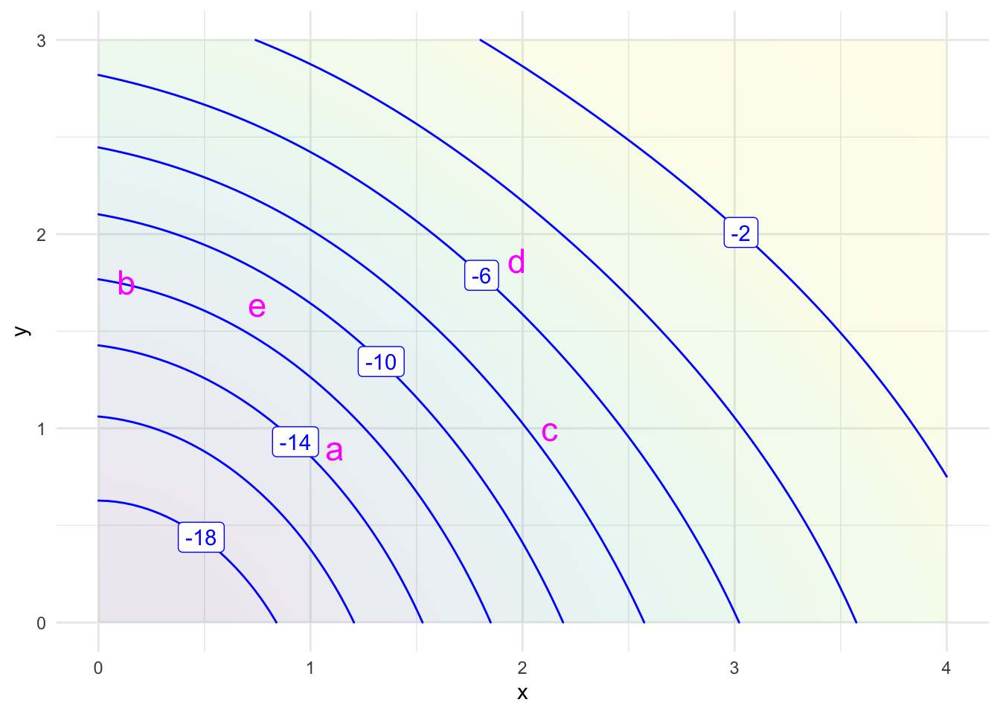

QR-I Assignment 3
Chapter 5 of the QR-A book
WarningRemember to hand in your work …
At any point, you can submit your answers by collecting them and uploading them to the class site.
No answers yet collected
If requested by your instructor, please identify here the people from whom you received assistance on this assignment.
If the answers that have been loaded automatically are not yours, press this button before starting your work:
NoteDrill for Chapter 5
Open drill questions in this document
Remember to submit your drill answers through that document. But for the exercises in the present document, use the “collect answers” at the top of this page.
NoteChapter Five
Exercise 1 Here are several quantities related to the function and economics of a solar power system.
For each of these system quantities, say whether the quantity is exogenous or endogenous. Keep in mind that the distinction is entirely about which quantities are connected to which. You will have to read through the whole list of system quantities to be able to say which are exogenous. Since you are not yet a solarphotaic engineer or financier, you’ll have to use your best judgement about which quantities are connected as inputs to any given quantity.
latitude (degrees) of the site cfs-1-iynwq
electricity price (USD/kWh) at which you can sell the power generated. cfs-2-btuqn
average cloudiness (%) cfs-3-ujkzw
interest rate (%) cfs-4-jzieq
system cost (USD) cfs-5-tbamv
area (m2) of the solar panels cfs-6-rqlvw
inclination (degrees) of the solar panels cfs-7-oecki
instantaneous power maximum capacity (kW) cfs-8-txjdw
yearly energy production (MWh) cfs-9-rgehu
return on investment (%) cfs-1-vclxo
Perhaps there was one or more quantities that you weren’t sure was related to the others. Identify one and write briefly about which possible input quantities you were ambivalent about and whence stems your ambivalence. Or, pick one of the quantities and explain which other quantities you regarded as an input.
CautionNext status step: complete the draft
Assigned to DTK
Exercise 2 Consider an everyday kind of question: Which is more to blame for discomfort in hot weather, the temperature or the humidity?
The blame question makes sense only if we think that humidity and temperature have something to do with comfort. Everyday experience strongly suggests that they do. For quantitative understanding, we can translate “something to do with …” into a mathematical framework: that comfort is a function of humidity and temperature. Functions are not the only way to represent the idea of “something to do with,” but experience has shown that they are powerful ways to do so. Knowing how functions are constructed and how to extract information from them is an essential component of quantitative analysis.
In Steadman’s model, sultriness is constructed as a function of temperature and relative humidity. That is, the inputs to the function are temperature and humidity. The output is sultriness. You can calculate the sultriness corresponding to the values of the inputs in Figure 1.
Inputs:
Figure 1 shows three values. When you change the inputs, the output changes accordingly. That is the characteristic of a function. The presentation in Figure 1 is adequate for someone who wants to compute the sultriness for given weather conditions. We gain more insight into sultriness if we present the output of the function for many different sets of inputs. Steadman’s paper displayed the function as a printed table, which was the only practical way of communicating such a complicated function in 1979 (that is, before the widespread availability of calculators or computers).
Are there any temperature/humidity combinations at which the output temperature (that is, the sultriness index) is lower than the input ambient temperature? gcb-1-kwe
At an input temperature of 37 C (that is, body temperature) what is the highest humidity level for which the inputs are in bounds?
gcb-2-e4kf
- Set the inputs to 37 degrees C and zero humidity. Note the function output.
3a. What’s the greatest amount you can change the humidity input without changing the function output?
gcb-3a-ekxe
3b. At 0% humidity, there is some input temperature where the output temperature is greater than the input. gcb-3b-2se
3c. At 50% humidity, there is some input temperature where the output temperature is greater than the input. gcb-3c-2se
- At 50% humidity, what’s the highest possible value for the output?
gcb-4-chsle
- At 100% humidity, set the input temperature to 20 deg C. The output will be 15 deg C. Now raise the input temperature slowly. Use the up-and-down triangles in the box showing the input temperature, so that you can change temperature by 0.1 deg C each click.
5a. How many clicks are required to raise the output temperature to 16 deg C?
gcb-5a-oeie
5b. What is the rate of change of output temperature with respect to temperature at with the inputs (20 C, 100%)?
gcb-5b-oeie
Exercise 3 Graphs of a function of one input, as in Figure 5.4, are familiar to many students from high school math courses. They are easily constructed with a computer. For our purposes, we use a package called {mosaicCalc} which provides several utilities for making graphics. To make a graph of a function with one input, you will need three pieces of information:
- What is the function you want to graph?
- What name you want to use for the input to the function?
- What graphics domain you want to show in the graph?
The command to use in R/mosaic is slice_plot(). It takes two arguments. For demonstration purposes, we’ll plot the hillside() function, using z as the name of the input and displaying the graph over the domain from -4 to 5.
The first argument is called a ☞ tilde expression ☜, the name of which comes from the character ~. Put the input name to be used on the right side of the tilde. On the left size, give an R expression for the function you want to graph (hillside) as well as the input name to use: hillside(z).
The second argument always looks like domain(z = -4:5), but of course you need to substitute in your input name and the lower and upper bounds that define the graphics domain. These are formatted using a colon to separate the lower from the upper bound.
You are welcome to place the whole command on one line. We’ve used multiple lines so that there is space for a # comment that describes the line. (You don’t need to do this.)
For each of the following item, put the appropriate command in the R chunk, verify that it works, and copy the command to the text-entry box. There will be one line in the text-entry box for each. Please keep them in order.
- Plot
osc()usingtas the input name with the graphics domain extending from zero to five. - Plot
hill()usingzas the input name. The graphics domain should go from -3 to 3. - Plot
doublings()usingfishas the input name. The graphics domain is zero to three. - Plot
osc() * hill()usingxas the input name. The graphics domain is -4 to 4. (Hint: Thexwill appear altogether three times in the tilde expression.)
In the textbox, put your answers to each of (a) - (d) on a separate line.
Exercise 4 We have defined for your convenience several one-input functions named f1() through f5(). Graph each of them, one at a time, on the domain -5 to 5 and, from the graph, read off the requested information. (Hint: All you need is the name of the function, you don’t have to worry about how we constructed it.)
- For
f1(), for what input does the output reach its maximum value? (Select the closest value.)
gmc-1-lesle
- For
f2(), what is the input where the output crosses zero? [Pick the closest answer.]
gmc-2-loie
- For
f3(), what is the minimum value of the output? [Pick the closest answer.]
gmc-3-yee
- For
f4(), at what input does the output cross zero? [Pick the closest answer.]
gmc-4-rwsle
- For
f5(), at how many different inputs does the output cross zero?
gmc-5-qdr
Exercise 5 Consider this plot of the hillside function:
- What R function is being used to make the plot?
dek-1-gmek
- Immediately following the name of the function, there is an opening parenthesis. The matching closing parenthesis is at the very end of the command. In R (as in many computer languages) the arguments to the function are contained inside the parentheses. If there is more than one argument, successive arguments are separated by commas. How many arguments are there to
slice_plot()?
dek-2-z38d
The first argument to slice_plot() tells which function you want to graph. In the example, the first argument is hillside(z) ~ z. This is called a ☞ tilde expression ☜ so named because the tilde character (~) appears.
| Left | Middle | Right |
|---|---|---|
hillside(z) |
~ (tilde) |
z |
The left part of the tilde expression is a formula written in more or less conventional algebraic form. Other examples for this formula:
2*z + 3,osc(z),hillside(z) * osc(z).The right part of the tilde expression gives the name of the input variable. In the example, the name is
z, but you can use whatever name you think appropriate. Note that the formula in (i) must be written in terms of the input-variable name.The middle part of the tilde expression is merely punctuation, but it is essential punctuation. Among other things, the tilde makes clear what are the left and right sides of the tilde expression.
- Suppose that you want to call the input quantity
x. You can easily modify the command to do this, just substitutexforz. In how many places do you have to make the change?
dek-3-jwkd
Focus now on the graphic itself—Figure 2. The name of the input variable appears as a label on the horizontal axis. The label on the vertical axis, in contrast, is just a reminder that we are plotting the output of the function versus the input quantity.
The vertical scale will be created automatically by slice_plot(), taking into account the range of function output values. But the horizontal axis is different: the user specifies this. The numerical extent of the horizontal axis is called the graphics domain.
The second argument to slice_plot() is used for the graphics domain specification.
- What is the graphics domain in Figure 2?
dek-4-p3n2
In the example, the second argument is domain(z = -2:4). The graphics domain specification will always look like this, and uses the R function domain().
- How many arguments does
domain()take in this example?
dek-4-7s2r
There are two punctuation symbols in the argument to domain(). The colon (:) is placed between the two limits to be used for the domain. -2:4 means “minus 2 to 4.” The graphics domain zero to ten would be 0:10. The other punctuation mark is =. To the left of the = goes the name of the input variable. The expression z = -2:4 means “the graphics domain of z is to be -2 to 4.
- Using the “graphing a function” interactive R chunk, write an expression to plot out the function
osc()over the graphics domain 0 to 5. Use whatever you like as the input name. After checking that your expression works, copy the expression into the following answer block.
Exercise 6 The slice_plot() function (see Exercise 3) produces the graph of a function with one input. Convention calls for the input to correspond to the horizontal axis and the output to the vertical axis.
For functions with two inputs, the input corresponds to the points in a two-dimensional space. That is, each possible input is a coordinate pair. To graphically represent each possible input uniquely, we need to use both the horizontal and vertical axes, one for the first input and the other for the second input. Where, then, to show the output.
Our preferred graphical format for functions of two inputs is called a ☞ contour plot ☜. The R chunk below shows the R/mosaic code to generate a plot. Run the chunk.
This R expression follows a similar form to that used for slice_plot(). Notice, however, that the tilde expression used in the first argument names both inputs: x & y on the right-hand side of the tilde. Likewise, the definition of the graphics domain involves two components, one for each of the inputs.
It takes some practice to get comfortable reading contour plots. The labels along each blue ☞ contour ☜ specify the output for any input that lies on the contour.
In principle, each possible input point has some contour line running through it. This is the same as saying that for each input, say, (x=1, y=2), the function has an output value. But if we drew a contour for every output value, the graph would be filled with blue ink and incomprehensible. To avoid this problem, only a handful of contours are drawn. Also, to avoid cluttering up the graph with output value labels, the contour_plot() R function labels only every second contour. The output value for the unlabeled contours are half-way in-between the output values for the two labeled contours that run side-by-side with the unlabeled one.
To illustrate, the input point (x=1, y=2) falls about half-way between the contour labeled 0.6 and the unlabeled contour corresponding to output value 0.4. Since the input point is located between the 0.4 and 0.6 contours, the corresponding output will be approximately 0.5.
In this book, we won’t dwell on teaching the syntax of the contour_plot() function. When we need it, we will give you a template so that you just have to fill in the details: the names of the two inputs, the function itself, and the extent of the graphics domain along each axis.
For now, we’ll practice how to read off the output for any given input. Consider Figure 3, which displays a function \(f(x,y)\) we have made up for the example.

For each of the five distinct input points labeled (a) to (e), give a good estimate of the corresponding output.